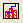

Ein Histogramm zeigt die Häufigkeitsverteilung des Datensatzes einer einzelnen Variablen. Histogramme erlauben eine schnelle Bewertung dieser Parameter:
Das Histogramm wird erzeugt, indem die Spannweite der Daten in gleich große Klasseneinteilungen aufgeteilt wird (automatisch oder benutzerspezifisch). Einteilungen sind Klassenspannweiten (Untergrenze ¡Ü Klasse < Obergrenze) für die Häufigkeitszählungen. Für jede Klasseneinteilung wird die Anzahl der Datenpunkte gezählt, die in diese Einteilung hineinfällt. Das Ergebnis ist ein Diagramm der Häufigkeit (d.h. der Anzahlen in jeder Einteilung) auf der vertikalen Achse vs. der Antwortvariablen auf der horizontalen Achse.
Inhalt |
Um ein Histogramm zu erstellen:
Origin berechnet automatisch die Größe der Einteilungen und erstellt eine neue Grafik aus der Vorlage HISTGM.OTP. Die eingeteilten Daten werden in einem Arbeitsblatt Binn gespeichert (siehe unten). Dieses Arbeitsblatt enthält die X-Werte der Klasseneinteilungen, Anzahlen, (kumulative) Summe und Prozentsätze.
|
Hinweis: Der Menübefehl Histogramm zeichnet alle ausgewählten Daten in den gleichen Layer. Der Menübefehl Gestapelte Histogramme (Zeichnen: Statistikdiagramme: Gestapelte Histogramme) zeichnet jeden ausgewählten Datensatz in seinem eigenen Layer (dabei werden für jeden Layer die gleichen Klasseneinteilungsgrenzen verwendet). |
Zum Zugreifen auf das Arbeitsblatt Binn:
Um das Histogramm benutzerdefiniert anzupassen:
Beide Aktionen öffnen den Dialog Details Zeichnung. Dabei ist auf der linken Seite des Dialogs das Diagrammsymbol für das Histogramm aktiv. Die Bedienelemente des Histogramms sind auf der rechten Seite des Dialogs über die Registerkarten verfügbar. Das Verhalten bei der Klasseneinteilung wird durch die Bedienelemente der Registerkarte Daten bestimmt. Beachten Sie, dass einige Bedienelemente der Registerkarte Daten nur für das Boxdiagramm relevant sind (die die Registerkarte Daten mit dem Histogramm teilt).
Bearbeiten Sie die Klasseneinteilungsgrenzen, indem Sie:
Den eingeteilten Daten (dem Histogramm) eine Verteilungskurve überlagern:
Siehe Einzelheiten zur Gruppe Kurve auf der Seite zur Registerkarte Daten des Dialogs Details Zeichnung..
|
Programmierungshinweise: Klassenbreite und -anzahl können über diese Systemvariablen festgelegt werden: Zum Festlegen der Klassenbreite verwenden Sie @HBS = value; value = -1, falls nicht festgelegt. Zum Festlegen der Klassenanzahl verwenden Sie @HBN = value; es wird gerundet und value = 0, falls nicht festgelegt. Zum Erzwingen einer Klassenanzahl verwenden Sie @HBM = value; value muss nicht ganzzahlig sein (es wird nicht gerundet). Prioritätsabfolge: @HBS > @HBN > @HBM Falls weder @HBS noch @HBN festgelegt sind, bestimmt @HBF = value automatisch die Anzahl der Klassen gemäß des folgenden Ausdrucks: Anzahl der Klassen = (max-min)/(1 + value* log10(npts)) |
Zum Erstellen von Histogramm + Wahrscheinlichkeiten:
Markieren Sie eine einzelne Spalte im Arbeitsblatt (oder einen Bereich einer Spalte im Arbeitsblatt) und wählen Sie Zeichnen: Statistikdiagramme: Histogramm + Wahrscheinlichkeiten oder klicken Sie auf die Schaltfläche Histogramm + Wahrscheinlichkeiten  auf der Symbolleiste 2D-Grafiken.
Dieser Menübefehl/diese Symbolleistenschaltfläche zeichnet eine kumulierte Summe der Beobachtungen in einem zweiten Diagrammlayer (Layer 2).
Zusätzlich schreibt der Menübefehl Histogramm + Wahrscheinlichkeiten die statistischen Ergebnisse -- den Mittelwert, die Standardabweichung, den Maximal- und den Minimalwert und die Gesamtzahl der Werte -- in das Ergebnisfenster.
|
Hinweis: Die beiden Layer in der Diagrammvorlage für Histogramm + Wahrscheinlichkeiten sind miteinander verknüpft. Stellen Sie daher sicher, dass der Hauptlayer -- Layer 1 -- der aktive Layer ist, bevor Sie Änderungen an der Skalierung der X-Achse oder an den Dimensionen des Diagrammlayers vornehmen. Das stellt sicher, dass die Achsenskalierungen und Dimensionen des Unterlayers -- in diesem Fall Layer 2 -- entsprechend angepasst sind. |